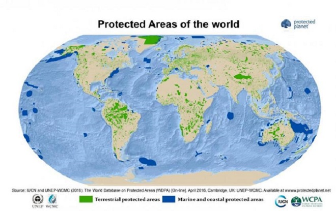

A protected area is a clearly defined geographical space, recognised, dedicated and managed, through legal or other effective means, to achieve the long term conservation of nature with associated ecosystem services and cultural values. (IUCN Definition 2008)
Protected areas conserve ecosystems and biodiversity.

Here are some websites with related issues and strategies: